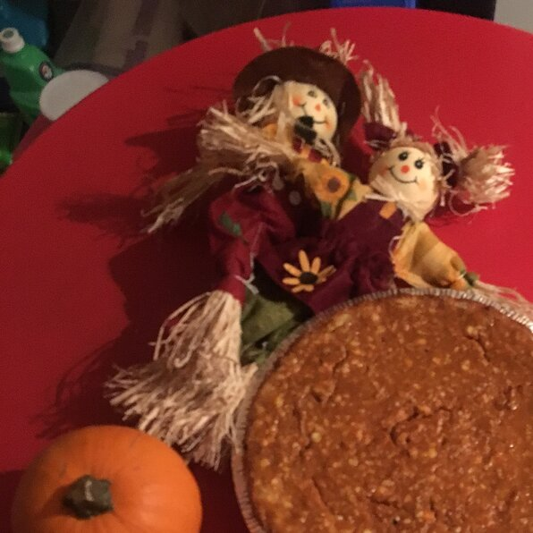

Cheesecake

Description
A great alternative to pumpkin pie, especially for those cheesecake fans out there. Serve topped with whipped cream.
Ingredients
- 2 (8 ounce) packages cream cheese, softened
- ½ cup white sugar
- ½ teaspoon vanilla extract
Steps
- Preheat oven to 325 degrees F (165 degrees C).
- In a large bowl, combine cream cheese, sugar and vanilla. Beat until smooth. Blend in eggs one at a time. Remove 1 cup of batter and spread into bottom of crust; set aside.
- Add pumpkin, cinnamon, cloves and nutmeg to the remaining batter and stir gently until well blended. Carefully spread over the batter in the crust.